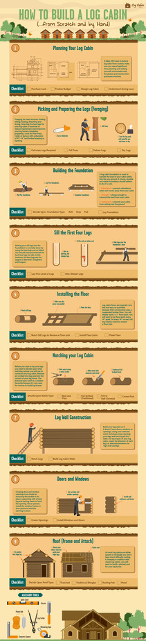

Due - April 15, 2022
Living in a beautiful hand crafted log cabin will make a lot of homesteaders and off-grid dreams come true. In an age of pre-fabricated furniture and modular concrete homes, a log cabin provides a unique character oozing craftsmanship, rustic charm and nature. Building a log cabin does not have to take huge amounts of previous experience, skill or talent, but, it will take hard work, planning, good tools and natural resources.
In this assignment you will write a full project plan for the construction of a log cabin. Your plan will include the business justification, requirements, a scope statement, a list of deliverables and due dates, a detailed project schedule, a risk assessment, defined roles and responsibilities, resource allocation, a quality assurance plan, and a communication plan.
Assume you have a labour force of ten, including yourself. You will have to collect all tasks required (see below in bold), arrange them in order of precedence with as many parallel activities as possible, estimate the duration of the project, estimate the costs of the project, and identify as many risks as you can and how you will overcome them. At the end of the assignment, you can compare the costs of your log cabin with the cost of purchasing an already constructed one.
The purchase of a 1500 square-foot log cabin on half an acre of land just north of the town of Penetanguishene Ontario costs $600,000CAD in total. The half-acre lot costs $250,000CAD and the log cabin $350,000CAD. Do you feel you can construct a log cabin on a similar half-acre lot in that location for a fraction of that cost? Complete the project to plan to find out.
There have been no specifications or requirements given to you in this assignment. As you browse each section, be sure to prepare a list of specifications and/or requirements before you star the actual planning. Be sure to include Specifications/Requirements in your project plan.
For designing your log cabin, you have to consider the floor plan and details, the zoning laws/building codes, land selection, and the costs of a log cabin.
The floor plan requires one worker and takes 30 days. Determining the exact boundaries of your property by referencing the zoning laws will take one person one day. Refreshing your knowledge of the local building codes and regulations will take one person two days. Selecting the exact location on your property where your log cabin will go will take one person two days. Estimating costs will take one person one day.
The costs of your log cabin cannot be determined in detail now, however a preliminary estimate can be made. The signigicant costs are
For picking and preparing the logs, you have to consider the best tree species, a log calculation, the felling of the trees, debarking, and drying of the logs.
Choosing a tree should take one person one day. Possible choices are pine trees, cedar, spruce or oak. Next you need a log calculation to determine how many logs you need. This will take one person one day. Let's assume you will require 100 logs. This requires the felling of 100 trees!! Let's assume one person can fall 20 trees in one day, and can debark and dry 40 logs in one day.
A log cabin foundation must carry the weight and load of a log cabin. A log cabin foundation is used to transfer the load of your cabin safely into the sub-ground. A strong, durable and stable foundation should adhere to the 3-s rule;
Laying the foundation will occur in three steps. First one has to pick a site for the foundation. Then one has to excavate the site (dig a hole) for the foundation. Finally, one has to pour the cement for the foundation.
Picking a site will take one person 3 days of land surveying. Excavating the site will take one person ten days but it can be done with ten people in one day. Pouring the cement for the foundation will require three people for one day (one person cannot do this job).
For laying the logs, you have to sill the logs, install the floor, and construct the log walls which includes the log cabin notches, the roof doors and windows.
Silling the logs takes one person 1 day. A sill is the horizontal piece that forms the lowest member or one of the lowest members of a framework or supporting structure. Installing the floor will take one person one day. Log cabin floors are typically very fast and easy to assemble because their construction uses a suspended lumber floor. Constructing the log walls should commence as if your cabin does not have doors, windows or openings. It should take one person ten days to put in the walls. Creating doors and windows is as simple as removing lumber in its place. It should take one person one day. As most log cabins are either square or rectangle, there should not be much difficulty in building a roof. Roofing a log cabin will take one person two days.
Once you have built your log cabin, the final stage is to weatherproof it. Moisture in humid climates and dampness in cold climates can very quickly cause your log home to rot if left unfinished. The most important factors are to clean, seal and stain your cabin.
Cleaning your logs should take one person two days. Staining your logs should take one person one day. Sealing your cabin should take one person two days.
For each task for each phase of the project, identify the risks and how you will mitigate them. Be sure to assess each risk according to severity and likelihood.
This section is usually completed after the project is finished. Therefore there is no need to complete this section for this assignment.
All nine steps can be found in the image:

Many tasks have been identified in the construction of your log cabin. As mentioned in the Introduction, assume you have a labour force of ten, including yourself. You will have to collect all tasks required, arrange them in order of precedence with as many parallel activities as possible (by Gantt chart or organizational network), estimate the duration of the project, estimate the costs of the project, and identify as many risks as you can and how you will overcome them. At the end of the assignment, you can compare the costs of your log cabin with the cost of purchasing an already constructed one. Note that although you made a preliminary estimate of costs, you now have enough information to add in the labour costs to obtain the total cost of your log cabin.
At the end of your project plan, you have to answer the following questions:
| Activity Number | Description | Duration (days) | Preceding Activities | Number of People |
| 1 | Establish site office | 3 | None | 3 |
| 2 | Clear topsoil from site | 3 | 1 | 6 |
| 3 | Order steelwork | 2 | None | 1 |
| 4 | Fabricate steelwork offsite | 14 | 3 | 8 |
| 5 | Deliver steelwork to the site | 2 | 1,4 | 4 |
| 6 | Order steel reinforcement | 2 | None | 1 |
| 7 | Fabricate steel reinforcement offsite | 7 | 6 | 6 |
| 8 | Deliver steel reinforcement to site | 1 | 1,7 | 2 |
| 9 | Deliver cladding to site | 1 | 1 | 2 |
| 10 | Excavate for foundations and floorslab | 4 | 2 | 7 |
| 11 | Place reinforcement for foundations and floor slab | 4 | 8,10 | 6 |
| 12 | Pour concrete in foundations and floor slab | 2 | 11 | 6 |
| 13 | Cure concrete | 7 | 12 | 0 |
| 14 | Erect steelwork | 8 | 5,13 | 10 |
| 15 | Place cladding on steelwork | 4 | 9,14 | 5 |
| 16 | Complete internal fit out of the building | 6 | 15 | 8 |
| 17 | Clean up site | 2 | 16 | 4 |
| 18 | Remove site office | 1 | 17 | 3 |
Assignment 4 is worth 15% of your final grade and as such is marked out of 15 as follows:
| Does not meet expectations | Satisfactory | Good | Exceeds Expectations | |
|---|---|---|---|---|
Business Justification (1 mark) | Does not meet requirements | Meets the most important requirements | Meets all requirements with minor errors | Meets all requirements with no errors |
Specifications/Requirements (2 marks) | Does not meet requirements | Meets the most important requirements | Meets all requirements with minor errors | Meets all requirements with no errors |
The Project Schedule (3 marks) | Does not meet requirements | Meets the most important requirements | Meets all requirements with minor errors | Meets all requirements with no errors |
Resource Allocation (3 marks) | Does not meet requirements | Meets the most important requirements | Meets all requirements with minor errors | Meets all requirements with no errors |
Final Cost Estimations (1 mark) | Does not meet requirements | Meets the most important requirements | Meets all requirements with minor errors | Meets all requirements with no errors |
Risk Assessment (2 marks) | Does not meet requirements | Meets the most important requirements | Meets all requirements with minor errors | Meets all requirements with no errors |
| The Conclusion (1 mark) | Does not meet requirements | Meets the most important requirements | Meets all requirements with minor errors | Meets all requirements with no errors |
| Questions (2 marks) | Answers no question correctly | Answers some questions correctly | Answers most questions correctly | Answers all Questions correctly |
Please email any source code and documentation to: miguel.watler@senecacollege.ca
You will be docked 10% if your assignment is submitted 1-2 days late.
You will be docked 20% if your assignment is submitted 3-4 days late.
You will be docked 30% if your assignment is submitted 5-6 days late.
You will be docked 40% if your assignment is submitted 7 days late.
You will be docked 50% if your assignment is submitted over 7 days late.